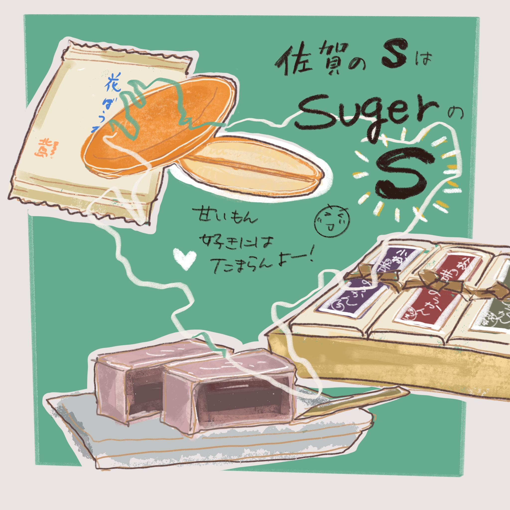

Basic information about ME!
中尾優理
↑
Don't make me cry :'(
ACB 2021 インターン生
Erasmus Rotterdam大学
心理学部 1年生
DO-IT Japan 2013 スカラー
自閉症スペクトラム障害
特性
- 聴覚過敏
- 遠近感を捉えることが苦手 (数字もよく読み間違える）
- 姿勢が悪かったり、体に力が入りすぎたりする
Background
| 出身＆生息地 | 佐賀県の田舎 |
|---|---|
| 略歴 |
高校卒業後、2020年に大学に入学する前には海外に留学したり、日本でアルバイトをして過ごす。 １９歳まで英語は全く話せなかった。 |
| 特技 | 絵を描くこと、英語(IELTS 7.5)、旅先やオンラインで知り合った人と仲良くなること |
少人数だと初対面でもよく話すため、 外交的に見えるが、大人数の集まりでは壁と友達。 猫の話題をふってもらうとすぐ懐く。
古着や中古の物が好きで、メルカリやリサイクルショップによく現れる。休日はたいてい何か作って過ごす。
飼っている猫の名前
ポッキー
プガチョフ
プラトン ←☆NEW☆
〜佐賀のよかとこ紹介〜
長崎と福岡の間に位置する地味な県。
九州１、存在感は薄いけど、あるんです、美味しいもの！！
あと、温泉とか♨︎、遺跡とか……！

ぜひ佐賀に寄ってかんね〜？:D